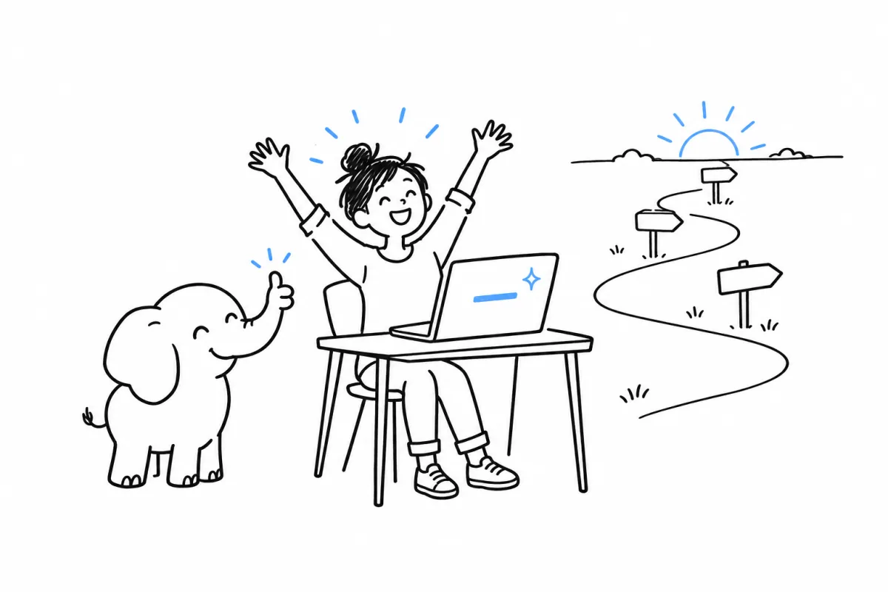

“Show me the code that gets me the job.”
You have never programmed, or barely. You write your first line in chapter one, and you run it. By the last chapter you have built a small web application, in the PHP that teams write today rather than the PHP of old tutorials.
The PHP Book. A full course, at your own pace.
